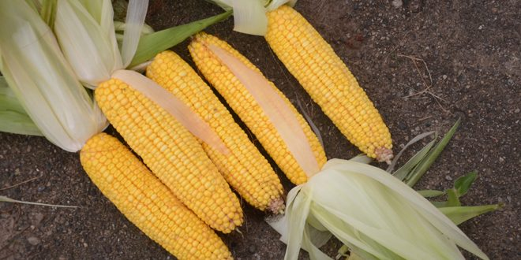
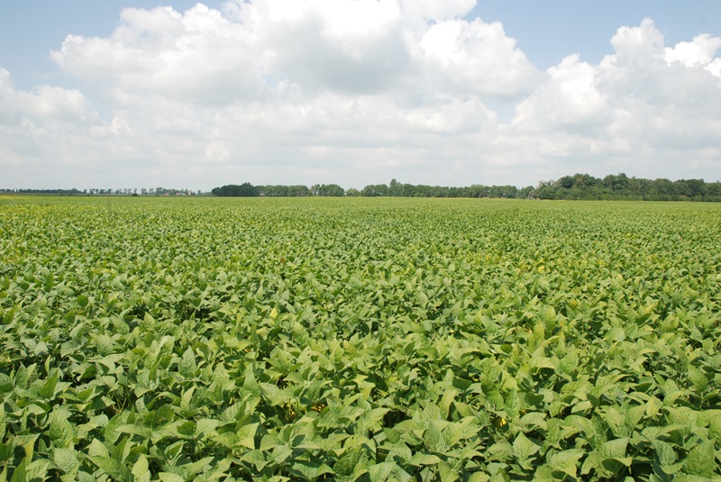
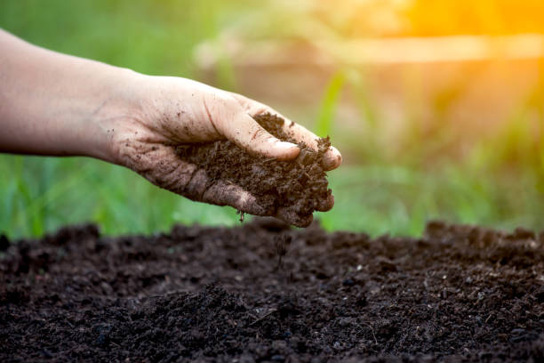
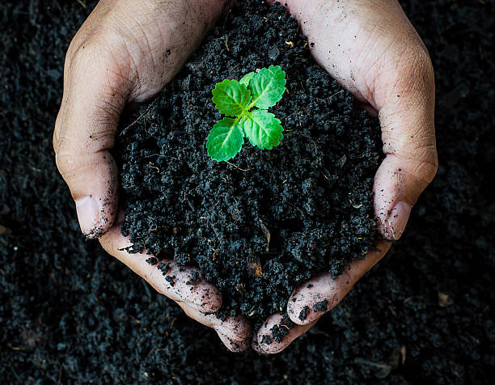

A glimpse of agricultural activities, field visits, plantation development, training programs, and sustainable farming initiatives.

Field inspection and agricultural advisory activities.

Knowledge sharing with farmers and agricultural students.

Planning and monitoring plantation development.

Modern farming techniques and practical demonstrations.